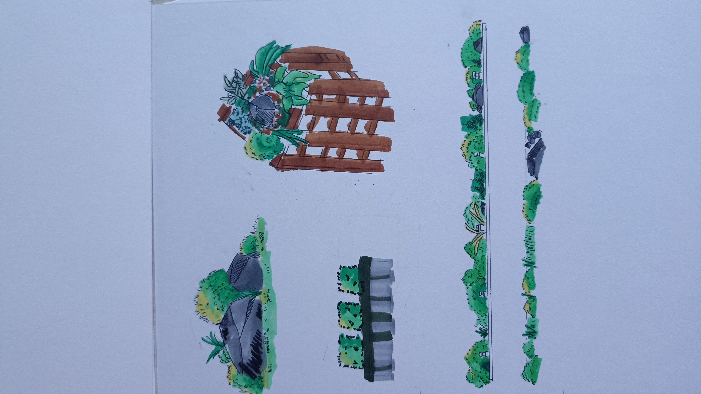
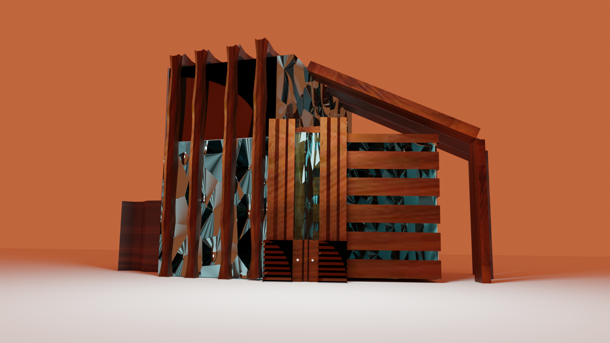
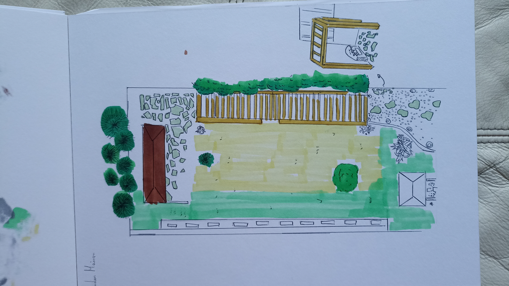
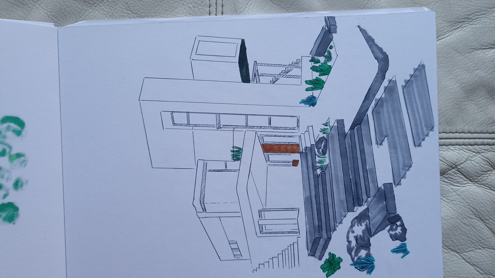

Paysagisme
Jardin public
Aménagement d'un parc urbain organisé en séquences plantées et espaces de rencontre.
Chaque programme est traité avec une signature visuelle lumineuse, pensée pour le confort et la simplicité d'usage.

Aménagement d'un parc urbain organisé en séquences plantées et espaces de rencontre.

Études volumétriques et propositions en trois dimensions pour l'espace extérieur.

Scénographie légère, gazon, dallage et mobilier adaptés pour une expérience fluide.

Supports visuels et présentations soignés pour accompagner les projets d'aménagement.